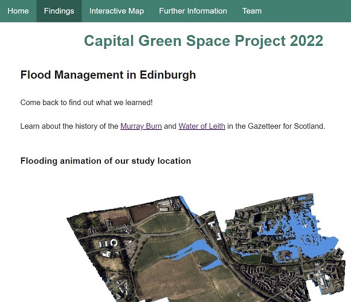
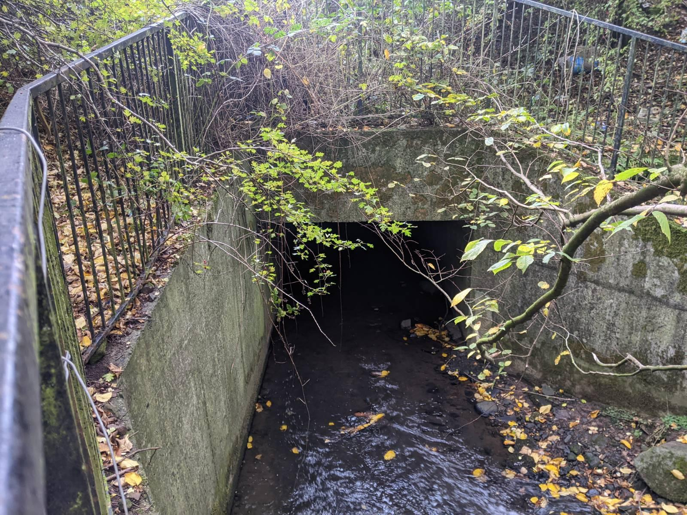
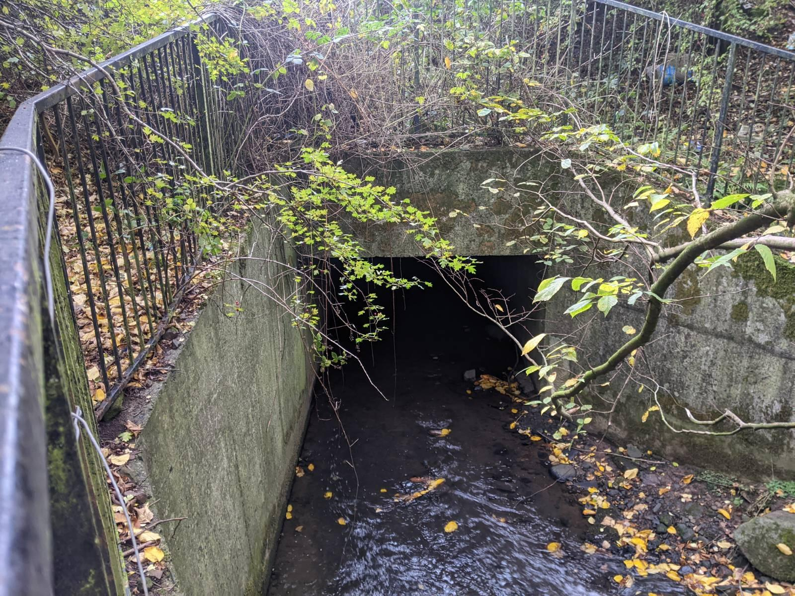
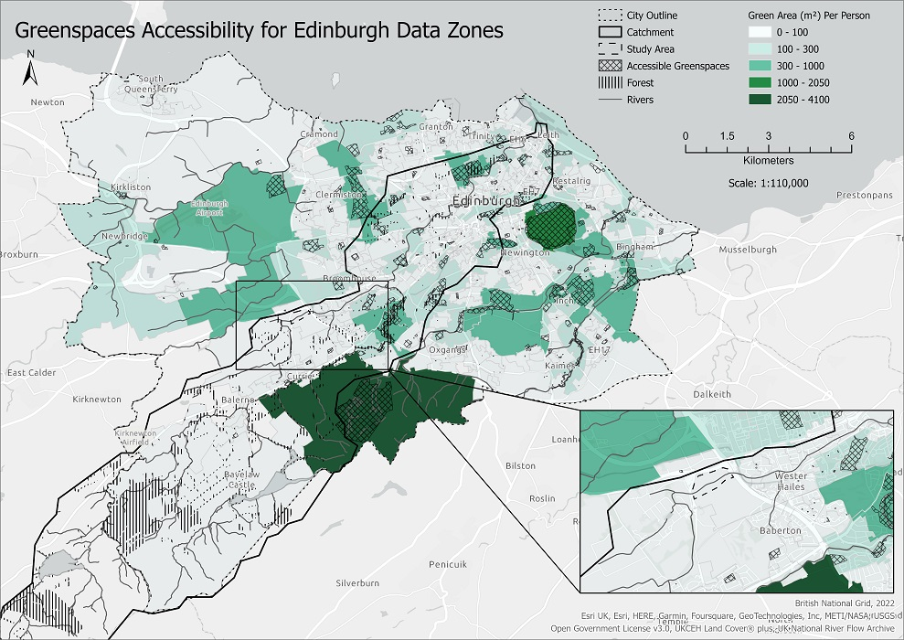
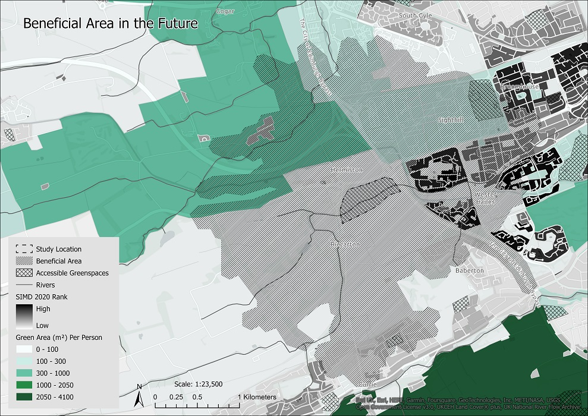

Evaluate current river management
Find areas of deprivation
Propose river restoration to alleviate deprivation
Capital Greenspace
Group 1: Flood Management

Ryan
Aherin
Presentation Lead
Social Deprivation,
GIS Specialist
Liwen
Fan
Presentation Lead
Restoration, Proposed Greenspace
Maria
Maily
Project Manager
Website Lead
Flood and River Managment, Webpages
Haziq
Suhaimee
Project Manager
Project Planning
SEPA Data,
Flood Impact
Rebecca
Zhang
Website
Lead
Design,
R Statistics,
Oracle
Yunshi
Liang
Data Lead
Project Planning
Environmental Deprivation, DEM, ArcGIS Specialist
Check the full project on our website: geos.ed.ac.uk/~s2412750/cgs_flood

Video created using ArcGIS and Clipchamp, using ©Getmapping PLc data
Evaluate current river management
Find areas of deprivation
Propose river restoration to alleviate deprivation

 

Accessible Greenspaces: Play Space, Playing Field, Public Park or Garden
Benefits: 1,612 people. 10.4 km2
Credits: Slides created using Reveal.js, template by Pierre Le Bras